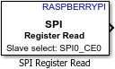

Read data from SPI slave device register
Simulink Support Package for Raspberry Pi Hardware

The SPI Register Read block initiates an SPI read operation from an SPI slave register. You can specify the data type and data length to get data from the slave registers. To open the pin map of the Raspberry Pi board, click the View pin map button.
For more information on SPI communication, refer to Support SPI Communication and The Raspberry Pi SPI Interface (MATLAB Support Package for Raspberry Pi Hardware)